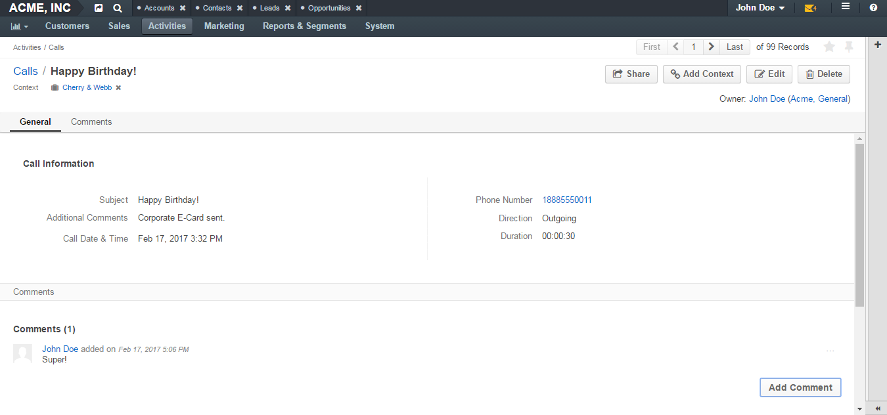

Call View Page¶
Description¶
Page Top¶
On the upper-left of the page, you can see the call subject (it serves as a name of the call log).
The next row contains a list of contexts associated with this call. To delete a call context, click the x icon next to it. See the Remove a Context from a Call action description.
The following set of action buttons is available in the upper-right part of the page:
- Share—(Enterprise Edition only) Click this button to share / unshare a call with other users. See the Share a Call Log and Unshare a Call Log action descriptions.
- Add Context—Click this button to add a context to a call. See the Add a Context to a Call action description.
- Edit—Click this button to edit a call log. See the Edit a Call action description.
- Delete—Click this button to delete a call log. See the Delete a Call action description.
In the next row you can check which user owns a specific call log record. Click the owner name to open the corresponding user view page. In brackets you can see the name of organization that owns the call log.
General Section¶
This section contains the main information about a call.
| Field | Description |
|---|---|
| Subject | What the call was about. |
| Additional Comments | Any call details that were worth mentioning. |
| Call Date & Time | When the call started. |
| Phone Number | A number that the call was made to / from. |
| Direction | Whether the call was outgoing or incoming. |
| Duration | How long the call was. |
Comments¶
In this section you can find comments made by users for a call.
Click the Comment button to add your comment. For more information, see the Comment a Call action description.